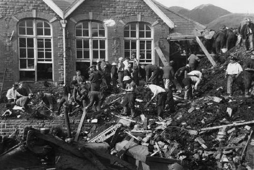

THE ABERFAN DISASTER
Looming Threat: In the Welsh coal-mining village of Aberfan, the National Coal Board (NCB) had spent years piling massive heaps of mining waste—known as "spoil tips"—on the steep hillsides overlooking the town. Tip No. 7, an enormous mound of loose rock, shale, and coal dust, was negligently built directly on top of a known natural spring. This fundamentally compromised the structural integrity of the pile, leaving it highly vulnerable to water saturation.

/>The Black Avalanche: Following days of heavy autumn rain, the waterlogged mountain of waste became dangerously unstable. On the morning of October 21, 1966, the tip underwent catastrophic liquefaction. A massive, 40-foot-high tidal wave of dense, black coal sludge roared down the mountainside. At 9:15 AM, it slammed directly into the Pantglas Junior School and a row of nearby houses, burying the buildings under thousands of tons of debris just minutes after the children had settled into their classrooms.
Key Facts
Date: October 21, 1966
Location: Aberfan, Wales, United Kingdom
Casualties: 144 people died (116 children and 28 adults)
Cause: A poorly managed colliery waste tip, negligently built over a natural spring on unstable ground, which liquefied and collapsed after heavy rain.
Lesson: The Aberfan disaster remains one of the United Kingdom's most heartbreaking and entirely preventable tragedies. An official tribunal placed the blame entirely on the National Coal Board, citing extreme negligence, ineptitude, and a total lack of safety oversight for the waste tips. The horrific loss of nearly an entire generation of the village's children sparked profound national mourning and outrage. It directly resulted in the Mines and Quarries (Tips) Act of 1969, which established strict new engineering, safety, and environmental regulations for the management of mining waste worldwide.